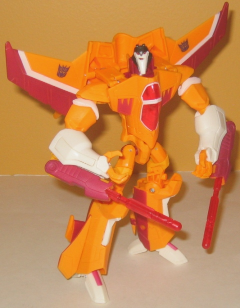
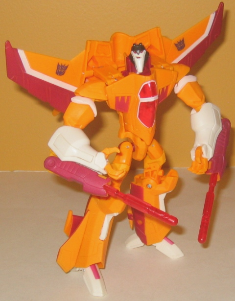
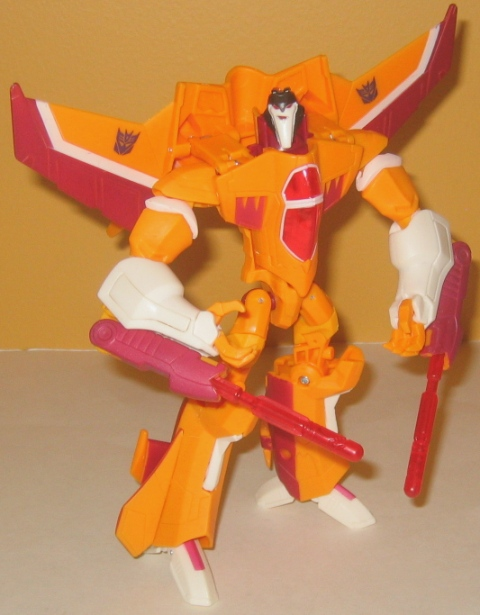

Allegiance : Decepticon
Size : Voyager
Difficulty of Transformation : Medium
Color Scheme : Bright yellowish orange, dull red, chalky white, and some transparent red and black
Rating : 7.2
Set Price : $25 U.S.
(NOTE: The Activators class
Autobot
Ratchet
pack-in is the exact same as the regular release.)
 Sunstorm
Sunstorm

Allegiance
: Decepticon
Size
: Voyager
Difficulty of Transformation
: Medium
Color Scheme
: Bright yellowish orange,
dull red, chalky white, and some transparent red and black
Rating
: 7.2
(NOTE: Because this is a repaint, this is not a full-blown review. This mainly covers any changes made to the mold and the color scheme, and merely compares it to Animated Voyager Starscream. For a review on the mold itself, read the review of Animated Voyager Starscream here .)
Sunstorm here is an homage
to the somewhat recently-named yellow "Seeker" in G1 who made a background
appearance now and then. In Animated, though, he's more than just background
cameo character-- he's a bonafide suck-up Starscream clone! The color scheme
follows Sunstorm's fairly closely, with a bright yellowish orange being
a main color and white being a main accent color. More dull red is used
on Animated Sunstorm than on the previous Sunstorm redecoes, however (if
it was used at all on those previous repaints). I like the addition of
more red, as this is a rather loud color scheme, and using more of a darker
color helps to tone it down slightly. It still is rather loud, though,
all things considered. I do like the transparent cherry red, though-- particularly
on the cockpit, where it's outlined in white paint. Sunstorm has some rather
major paint app QA issues, however. Usually you can find a Transformer
figure now and then that has bad paint, but from reports on the web it's
apparently quite hard to find a Sunstorm that DOESN'T have bad paint. The
lines are uneven or "off" slightly, and there isn't a thick enough coat
of paint on the figure in regards to the white and dark red paint-- the
orange "shows through" a little, particularly on the former. It's a real
shame, as it makes the figure look a bit amateurish and messy.
No mold changes have
been made to Animated Sunstorm.
Sunstorm is a nice enough
homage to the obscure G1 Seeker of the same name, but the loud color scheme,
combined with the sloppy paint apps, and medicore mold make this a pick-up
only for Seeker fans or fans of the character-- particularly if you already
have Activators Ratchet. Easily my least favorite of this mold's color
schemes.
Review by Beastbot